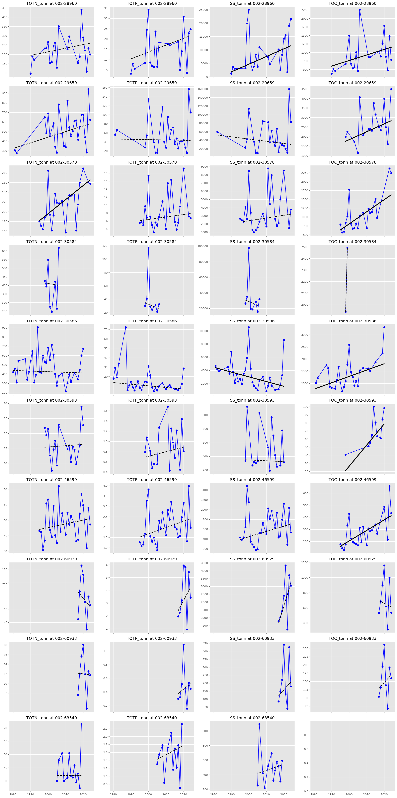
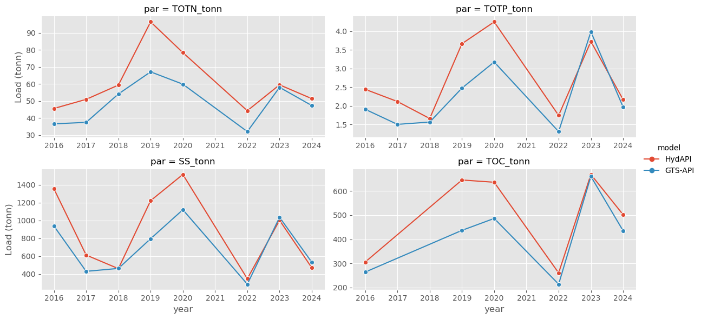

import warnings
import matplotlib.pyplot as plt
import nivapy3 as nivapy
import pandas as pd
import seaborn as sn
warnings.simplefilter("ignore")
plt.style.use("ggplot")TEOTIL3 for Lillestrøm kommune
Notebook 04: Estimate annual loads
1. Sites of interest
# Read site data
xl_path = r"../data/lillestrom_monitoring_sites.xlsx"
stn_df = pd.read_excel(xl_path, sheet_name="chem_stns")
stn_df| catchment | station_id | station_name | regine | wb_id | wb_name | lon | lat | comment | |
|---|---|---|---|---|---|---|---|---|---|
| 0 | Sagelva | 002-46599 | Sagelva ved Skjetten bro (F3) | 002.CBA0 | 002-3899-R | Fjellhamarelva - Sagelva | 11.01695 | 59.95850 | Downstream |
| 1 | Sagelva | 002-63540 | Fjellhammarelva (F10) | 002.CBA0 | 002-3899-R | Fjellhamarelva - Sagelva | 10.99617 | 59.94419 | Slightly upstream |
| 2 | Nitelva | 002-30586 | Rud Nitelva (N8 ) | 002.CB0 | 002-3891-R | Nedre Nitelva | 11.05700 | 59.94553 | Downstream |
| 3 | Nitelva | 002-30578 | Kjellerholen Nitelva (N6) | 002.CC0 | 002-1638-R | Nitelva Slattum-Kjeller | 11.00850 | 59.97925 | Slightly upstream |
| 4 | Leira | 002-29659 | Leira ved Borgen bru (L5) | 002.CAA0 | 002-3384-R | Leira nedstrøms Krokfoss | 11.10032 | 59.95036 | Downstream |
| 5 | Leira | 002-30584 | Leira ved Leirsund (L8) | 002.CAA0 | 002-3384-R | Leira nedstrøms Krokfoss | 11.08849 | 59.99755 | Slightly upstream |
| 6 | Rømua | 002-28960 | Rømua ved Lørenfallet - RØM1 | 002.D2Z | 002-3659-R | Rømua | 11.22099 | 60.02163 | Downstream |
| 7 | Jeksla | 002-30593 | Jeksla ved Haugli, J14 | 002.CAA0 | 002-599-R | Jeksla | 11.10637 | 60.00199 | Downstream. Small part of regine |
| 8 | Åa | 002-60929 | Fossåa ved Sylta (ÅA1) | 002.D3Z | 002-3685-R | Fossåa | 11.30018 | 59.99209 | Downstream |
| 9 | Åa | 002-60963 | Sloråa ved Bruvollen (ÅA3) | 002.D3Z | 002-3687-R | Sloråa | 11.34807 | 59.98512 | Upstream. North branch |
| 10 | Åa | 002-60964 | Kauserudåa før samløp Sloråa (ÅA4) | 002.D3Z | 002-3692-R | Stensrudåa - Korsåa | 11.34823 | 59.98391 | Upstream. South branch |
| 11 | Gansåa | 002-60933 | Gansåa nedstrøms Dalen RA (BD) | 002.C5 | 002-3655-R | Gansåa | 11.22275 | 59.86139 | Downstream. Small part of regine |
2. Water chemistry data
Use the cleaned and filtered water chemistry data from Notebook 02.
# Chem from Vannmiljø
xl_path = r"../data/cleaned_concs_stations.xlsx"
wc_df = pd.read_excel(xl_path, sheet_name="cleaned_chem")
wc_df.columns = [col.replace("µ", "u") for col in wc_df.columns]
wc_df.head()| station_code | station_name | sample_date | year | SS_mg/l | TOC_mg/l | TOTN_ug/l | TOTP_ug/l | |
|---|---|---|---|---|---|---|---|---|
| 0 | 002-28960 | Rømua ved Lørenfallet - RØM1 | 1990-04-30 | 1990 | 22.0 | 7.7 | 1790.0 | 54.0 |
| 1 | 002-28960 | Rømua ved Lørenfallet - RØM1 | 1990-05-14 | 1990 | 6.8 | 5.9 | 1080.0 | 34.0 |
| 2 | 002-28960 | Rømua ved Lørenfallet - RØM1 | 1990-05-28 | 1990 | 14.0 | 4.2 | 1430.0 | 34.0 |
| 3 | 002-28960 | Rømua ved Lørenfallet - RØM1 | 1990-06-11 | 1990 | 10.0 | 4.5 | 1100.0 | 40.0 |
| 4 | 002-28960 | Rømua ved Lørenfallet - RØM1 | 1990-06-25 | 1990 | 24.0 | 4.7 | 2260.0 | 65.0 |
3. Flow data
Use modelled data from the GTS API. For Sagelva, we also have measured data from the same location as the water chemistry sampling, so we can check to assess the effect of using modelled discharge (at least for this single location) - see Section 6.
# Flows from NVE
xl_path = r"../data/nve_data.xlsx"
gts_df = pd.read_excel(xl_path, sheet_name="gts-api")
nve_df = pd.read_excel(xl_path, sheet_name="hyd-api")
gts_df.head()| date | 002-101949 | 002-106796 | 002-106815 | 002-106818 | 002-109603 | 002-109604 | 002-109608 | 002-111393 | 002-112453 | ... | 002-79092 | 002-79097 | 002-79557 | 002-80573 | 002-81594 | 002-81595 | 002-91322 | 002-94483 | 002-98385 | 002-98386 | |
|---|---|---|---|---|---|---|---|---|---|---|---|---|---|---|---|---|---|---|---|---|---|
| 0 | 1980-01-01 | 0.998913 | 0.129389 | 0.234766 | 0.233588 | 0.588398 | 0.538709 | 0.324984 | 2.258290 | 0.580173 | ... | 2.901668 | 1.046488 | 1.749078 | 3.046249 | 3.087813 | 5.773402 | 0.067665 | 0.069442 | 1.580484 | 1.629586 |
| 1 | 1980-01-02 | 0.920197 | 0.126014 | 0.227687 | 0.226545 | 0.562034 | 0.513900 | 0.319262 | 2.149286 | 0.553964 | ... | 2.723901 | 0.967863 | 1.660796 | 2.852126 | 2.905301 | 5.484510 | 0.064337 | 0.067932 | 1.502468 | 1.553539 |
| 2 | 1980-01-03 | 0.845916 | 0.119263 | 0.220609 | 0.219502 | 0.546455 | 0.498542 | 0.315829 | 2.068717 | 0.538477 | ... | 2.544283 | 0.891453 | 1.609298 | 2.676668 | 2.720926 | 5.213396 | 0.062118 | 0.063403 | 1.441939 | 1.493788 |
| 3 | 1980-01-04 | 0.788265 | 0.118138 | 0.218249 | 0.217155 | 0.540463 | 0.492635 | 0.308963 | 2.004736 | 0.532520 | ... | 2.412810 | 0.833868 | 1.554123 | 2.538541 | 2.573799 | 5.004504 | 0.061009 | 0.063403 | 1.393516 | 1.436752 |
| 4 | 1980-01-05 | 0.751679 | 0.115888 | 0.217070 | 0.215981 | 0.530876 | 0.484365 | 0.305531 | 1.990518 | 0.522990 | ... | 2.320223 | 0.797324 | 1.541248 | 2.435880 | 2.465781 | 4.880058 | 0.059900 | 0.063403 | 1.366614 | 1.412308 |
5 rows × 74 columns
4. Estimate annual loads
Using the OSPAR method (the same method used for Elveovervåkingsprogrammet).
val_cols = [
"TOTN_ug/l",
"TOTP_ug/l",
"SS_mg/l",
"TOC_mg/l",
]
df_list = []
for stn_id, stn_wc_df in wc_df.groupby("station_code"):
# Prepare data
stn_wc_df = stn_wc_df.set_index("sample_date")[val_cols].sort_index()
q_df = gts_df.set_index("date")[[stn_id]]
q_df.columns = ["flow_m3/s"]
# Calculate loads
lds_df = (
nivapy.stats.estimate_fluxes(
q_df,
stn_wc_df,
base_freq="D",
agg_freq="YE",
method="ospar_annual",
st_date=None,
end_date=None,
plot_fold=None,
)
.dropna(how="all")
.reset_index()
)
# Convert to tonnes
cols = [col for col in lds_df.columns if col.endswith("_kg")]
lds_df[cols] = lds_df[cols] / 1000
cols = [col.replace("kg", "tonn") for col in lds_df.columns]
lds_df.columns = cols
lds_df = lds_df.reset_index()
lds_df["station_code"] = stn_id
lds_df = lds_df[
["station_code", "year"]
+ [col for col in lds_df.columns if col.endswith("_tonn")]
]
df_list.append(lds_df)
lds_df = pd.concat(df_list, axis="rows")
lds_df.head()| station_code | year | TOTN_tonn | TOTP_tonn | SS_tonn | TOC_tonn | |
|---|---|---|---|---|---|---|
| 0 | 002-28960 | 1990 | 96.300590 | 3.134720 | 1125.209562 | 374.573984 |
| 1 | 002-28960 | 1991 | 188.748221 | 8.012179 | 3578.643200 | 520.207794 |
| 2 | 002-28960 | 1992 | 170.753689 | 5.391133 | 3016.063269 | 459.973911 |
| 3 | 002-28960 | 1998 | 232.150551 | 8.431335 | 3146.030529 | 662.295678 |
| 4 | 002-28960 | 1999 | 234.147542 | 24.474299 | 19898.397088 | NaN |
5. Tests for trends
Using Mann-Kendall and Sen’s slope.
val_cols = ["TOTN_tonn", "TOTP_tonn", "SS_tonn", "TOC_tonn"]
fig, axes = plt.subplots(
nrows=len(lds_df["station_code"].unique()),
ncols=4,
figsize=(20, 40),
sharex=True,
sharey=False,
)
res_dict = {
"station_id": [],
"par": [],
"mk_trend": [],
"mk_pval": [],
"sslp": [],
"sslp_ub": [],
"sslp_lb": [],
}
for row_idx, (stn_id, stn_lds_df) in enumerate(lds_df.groupby("station_code")):
stn_lds_df = stn_lds_df.sort_values("year")
for col_idx, par in enumerate(val_cols):
stn_par_df = stn_lds_df[["year", par]].dropna(subset=par)
if len(stn_par_df) > 1:
# Test for trends
mk_df = nivapy.stats.mk_test(stn_par_df, par, alpha=0.05)
res_df, sen_df = nivapy.stats.sens_slope(
stn_par_df, par, index_col="year", alpha=0.05
)
# Extract results
trend = mk_df.loc["trend", "value"]
pval = mk_df.loc["p", "value"]
sslp = res_df.loc["sslp"]["value"]
icpt = res_df.loc["icpt"]["value"]
lb = res_df.loc["lb"]["value"]
ub = res_df.loc["ub"]["value"]
# Add to results
res_dict["station_id"].append(stn_id)
res_dict["par"].append(par)
res_dict["mk_trend"].append(trend)
res_dict["mk_pval"].append(pval)
res_dict["sslp"].append(sslp)
res_dict["sslp_ub"].append(ub)
res_dict["sslp_lb"].append(lb)
# Plot
axes[row_idx, col_idx].plot(stn_par_df["year"], stn_par_df[par], "bo-")
if trend != "no trend":
axes[row_idx, col_idx].plot(
sen_df.index.values,
sen_df.index.values * sslp + icpt,
"k-",
lw=3,
)
else:
axes[row_idx, col_idx].plot(
sen_df.index.values,
sen_df.index.values * sslp + icpt,
"k--",
lw=2,
)
axes[row_idx, col_idx].set_title(f"{par} at {stn_id}")
plt.tight_layout()
png_path = r"../plots/loads/all_stations_ann_loads.png"
plt.savefig(png_path, dpi=200, bbox_inches="tight")
# Merge results
stat_df = pd.DataFrame(res_dict)
stat_df = pd.merge(
stn_df[["catchment", "station_id", "station_name", "comment"]],
stat_df,
how="right",
on="station_id",
)
stat_dfWARNING: The data series has fewer than 10 non-null values. Significance estimates may be unreliable.
WARNING: The data series has fewer than 10 non-null values. Significance estimates may be unreliable.
WARNING: The data series has fewer than 10 non-null values. Significance estimates may be unreliable.
WARNING: The data series has fewer than 10 non-null values. Significance estimates may be unreliable.
WARNING: The data series has fewer than 10 non-null values. Significance estimates may be unreliable.
WARNING: The data series has fewer than 10 non-null values. Significance estimates may be unreliable.
WARNING: The data series has fewer than 10 non-null values. Significance estimates may be unreliable.
WARNING: The data series has fewer than 10 non-null values. Significance estimates may be unreliable.
WARNING: The data series has fewer than 10 non-null values. Significance estimates may be unreliable.
WARNING: The data series has fewer than 10 non-null values. Significance estimates may be unreliable.
WARNING: The data series has fewer than 10 non-null values. Significance estimates may be unreliable.
WARNING: The data series has fewer than 10 non-null values. Significance estimates may be unreliable.| catchment | station_id | station_name | comment | par | mk_trend | mk_pval | sslp | sslp_ub | sslp_lb | |
|---|---|---|---|---|---|---|---|---|---|---|
| 0 | Rømua | 002-28960 | Rømua ved Lørenfallet - RØM1 | Downstream | TOTN_tonn | no trend | 0.397587 | 1.936147 | 5.258516 | -1.574024 |
| 1 | Rømua | 002-28960 | Rømua ved Lørenfallet - RØM1 | Downstream | TOTP_tonn | no trend | 0.158570 | 0.333058 | 0.635567 | -0.117168 |
| 2 | Rømua | 002-28960 | Rømua ved Lørenfallet - RØM1 | Downstream | SS_tonn | increasing | 0.042331 | 286.880653 | 538.936434 | 18.729156 |
| 3 | Rømua | 002-28960 | Rømua ved Lørenfallet - RØM1 | Downstream | TOC_tonn | increasing | 0.037198 | 16.322569 | 32.668867 | 1.325270 |
| 4 | Leira | 002-29659 | Leira ved Borgen bru (L5) | Downstream | TOTN_tonn | no trend | 0.133361 | 5.872426 | 11.762655 | -2.002579 |
| 5 | Leira | 002-29659 | Leira ved Borgen bru (L5) | Downstream | TOTP_tonn | no trend | 0.833516 | -0.069298 | 1.457098 | -1.199026 |
| 6 | Leira | 002-29659 | Leira ved Borgen bru (L5) | Downstream | SS_tonn | no trend | 0.572782 | -523.559049 | 1174.945013 | -1729.074901 |
| 7 | Leira | 002-29659 | Leira ved Borgen bru (L5) | Downstream | TOC_tonn | increasing | 0.040816 | 41.400451 | 100.272879 | 4.684833 |
| 8 | Nitelva | 002-30578 | Kjellerholen Nitelva (N6) | Slightly upstream | TOTN_tonn | increasing | 0.003160 | 2.892445 | 3.827863 | 1.620635 |
| 9 | Nitelva | 002-30578 | Kjellerholen Nitelva (N6) | Slightly upstream | TOTP_tonn | no trend | 0.333358 | 0.061727 | 0.245877 | -0.087116 |
| 10 | Nitelva | 002-30578 | Kjellerholen Nitelva (N6) | Slightly upstream | SS_tonn | no trend | 0.503037 | 33.495205 | 127.673793 | -46.279179 |
| 11 | Nitelva | 002-30578 | Kjellerholen Nitelva (N6) | Slightly upstream | TOC_tonn | increasing | 0.001233 | 34.180602 | 55.267216 | 14.983490 |
| 12 | Leira | 002-30584 | Leira ved Leirsund (L8) | Slightly upstream | TOTN_tonn | no trend | 0.901539 | -1.913589 | 68.513035 | -50.080597 |
| 13 | Leira | 002-30584 | Leira ved Leirsund (L8) | Slightly upstream | TOTP_tonn | no trend | 0.536187 | -1.215110 | 2.048939 | -10.156385 |
| 14 | Leira | 002-30584 | Leira ved Leirsund (L8) | Slightly upstream | SS_tonn | no trend | 0.536187 | -964.195873 | 3335.744209 | -10988.173879 |
| 15 | Leira | 002-30584 | Leira ved Leirsund (L8) | Slightly upstream | TOC_tonn | no trend | 1.000000 | 555.673350 | 555.673350 | 555.673350 |
| 16 | Nitelva | 002-30586 | Rud Nitelva (N8 ) | Downstream | TOTN_tonn | no trend | 0.678080 | -0.668230 | 3.787348 | -5.218567 |
| 17 | Nitelva | 002-30586 | Rud Nitelva (N8 ) | Downstream | TOTP_tonn | no trend | 0.057758 | -0.173267 | 0.010828 | -0.404018 |
| 18 | Nitelva | 002-30586 | Rud Nitelva (N8 ) | Downstream | SS_tonn | decreasing | 0.006133 | -72.036237 | -25.974961 | -112.015769 |
| 19 | Nitelva | 002-30586 | Rud Nitelva (N8 ) | Downstream | TOC_tonn | increasing | 0.021839 | 25.992383 | 46.149403 | 3.792064 |
| 20 | Jeksla | 002-30593 | Jeksla ved Haugli, J14 | Downstream. Small part of regine | TOTN_tonn | no trend | 0.879573 | 0.042725 | 0.483121 | -0.408332 |
| 21 | Jeksla | 002-30593 | Jeksla ved Haugli, J14 | Downstream. Small part of regine | TOTP_tonn | no trend | 0.752642 | 0.008912 | 0.041980 | -0.025887 |
| 22 | Jeksla | 002-30593 | Jeksla ved Haugli, J14 | Downstream. Small part of regine | SS_tonn | no trend | 0.685329 | -1.194917 | 20.977795 | -20.732172 |
| 23 | Jeksla | 002-30593 | Jeksla ved Haugli, J14 | Downstream. Small part of regine | TOC_tonn | increasing | 0.031823 | 2.615842 | 6.992590 | 0.927303 |
| 24 | Sagelva | 002-46599 | Sagelva ved Skjetten bro (F3) | Downstream | TOTN_tonn | no trend | 0.428254 | 0.239209 | 0.799039 | -0.346228 |
| 25 | Sagelva | 002-46599 | Sagelva ved Skjetten bro (F3) | Downstream | TOTP_tonn | no trend | 0.060625 | 0.030450 | 0.076342 | -0.003102 |
| 26 | Sagelva | 002-46599 | Sagelva ved Skjetten bro (F3) | Downstream | SS_tonn | no trend | 0.196181 | 10.803314 | 26.098680 | -7.997020 |
| 27 | Sagelva | 002-46599 | Sagelva ved Skjetten bro (F3) | Downstream | TOC_tonn | increasing | 0.002217 | 8.759767 | 12.952074 | 2.802325 |
| 28 | Åa | 002-60929 | Fossåa ved Sylta (ÅA1) | Downstream | TOTN_tonn | no trend | 0.536187 | -3.262408 | 18.270716 | -14.320412 |
| 29 | Åa | 002-60929 | Fossåa ved Sylta (ÅA1) | Downstream | TOTP_tonn | no trend | 0.536187 | 0.258352 | 1.236503 | -0.632585 |
| 30 | Åa | 002-60929 | Fossåa ved Sylta (ÅA1) | Downstream | SS_tonn | no trend | 0.173546 | 364.359457 | 979.548848 | -313.197362 |
| 31 | Åa | 002-60929 | Fossåa ved Sylta (ÅA1) | Downstream | TOC_tonn | no trend | 1.000000 | -11.306941 | 189.207029 | -155.448810 |
| 32 | Gansåa | 002-60933 | Gansåa nedstrøms Dalen RA (BD) | Downstream. Small part of regine | TOTN_tonn | no trend | 0.901539 | -0.046681 | 3.466768 | -1.840166 |
| 33 | Gansåa | 002-60933 | Gansåa nedstrøms Dalen RA (BD) | Downstream. Small part of regine | TOTP_tonn | no trend | 0.710523 | 0.020651 | 0.145490 | -0.120196 |
| 34 | Gansåa | 002-60933 | Gansåa nedstrøms Dalen RA (BD) | Downstream. Small part of regine | SS_tonn | no trend | 0.710523 | 12.592797 | 72.959470 | -60.177296 |
| 35 | Gansåa | 002-60933 | Gansåa nedstrøms Dalen RA (BD) | Downstream. Small part of regine | TOC_tonn | no trend | 0.710523 | 5.848127 | 46.088663 | -28.300592 |
| 36 | Sagelva | 002-63540 | Fjellhammarelva (F10) | Slightly upstream | TOTN_tonn | no trend | 1.000000 | 0.000885 | 1.974425 | -1.773555 |
| 37 | Sagelva | 002-63540 | Fjellhammarelva (F10) | Slightly upstream | TOTP_tonn | no trend | 0.631222 | 0.023047 | 0.079115 | -0.070489 |
| 38 | Sagelva | 002-63540 | Fjellhammarelva (F10) | Slightly upstream | SS_tonn | no trend | 0.537134 | 8.287852 | 36.038695 | -43.572960 |

# Save
xl_path = r"../data/annual_loads_stations.xlsx"
with pd.ExcelWriter(xl_path) as writer:
lds_df.to_excel(writer, sheet_name="annual_loads", index=False)
stat_df.to_excel(writer, sheet_name="load_trends", index=False)6. Check effect of using NVE’s modelled discharge data
Compare load estimates for Sagelva using (i) measured discharge from the NVE station at the same location as the chemistry sampling site, and (ii) simulated water discharge via the GTS API.
wc_id = "002-46599"
nve_id = "2.1185.0"
sag_wc_df = wc_df.query("station_code == @wc_id").set_index("sample_date")[
["TOTN_ug/l", "TOTP_ug/l", "SS_mg/l", "TOC_mg/l"]
]
q_df = nve_df.query("station_id == @nve_id").set_index("date")[
["nve_obs_discharge_m3ps"]
]
q_df.columns = ["flow_m3/s"]
sag_lds_df = (
nivapy.stats.estimate_fluxes(
q_df,
sag_wc_df,
base_freq="D",
agg_freq="YE",
method="ospar_annual",
st_date=None,
end_date=None,
plot_fold=None,
)
.dropna(how="all")
.reset_index()
)
# Convert to tonnes
cols = [col for col in sag_lds_df.columns if col.endswith("_kg")]
sag_lds_df[cols] = sag_lds_df[cols] / 1000
cols = [col.replace("kg", "tonn") for col in sag_lds_df.columns]
sag_lds_df.columns = cols
sag_lds_df2 = lds_df.query("(station_code == @wc_id) and (year >= 2016)")[
sag_lds_df.columns
].copy()
sag_lds_df["model"] = "HydAPI"
sag_lds_df2["model"] = "GTS-API"
sag_lds_df = pd.concat([sag_lds_df, sag_lds_df2], axis="rows").melt(
id_vars=["model", "year"], var_name="par", value_name="Load (tonn)"
)
sn.relplot(
data=sag_lds_df,
x="year",
y="Load (tonn)",
hue="model",
col="par",
col_wrap=2,
kind="line",
marker="o",
facet_kws={"sharex": False, "sharey": False},
height=3,
aspect=2,
)
We see that annual loads estimated using water discharge from the GTS API are usually slightly lower than those using “real” monitoring data. This is consistent with the assessment in Notebook 02, which showed that simulated flows from the GTS API are biased-low by between 16 % and 18 %.